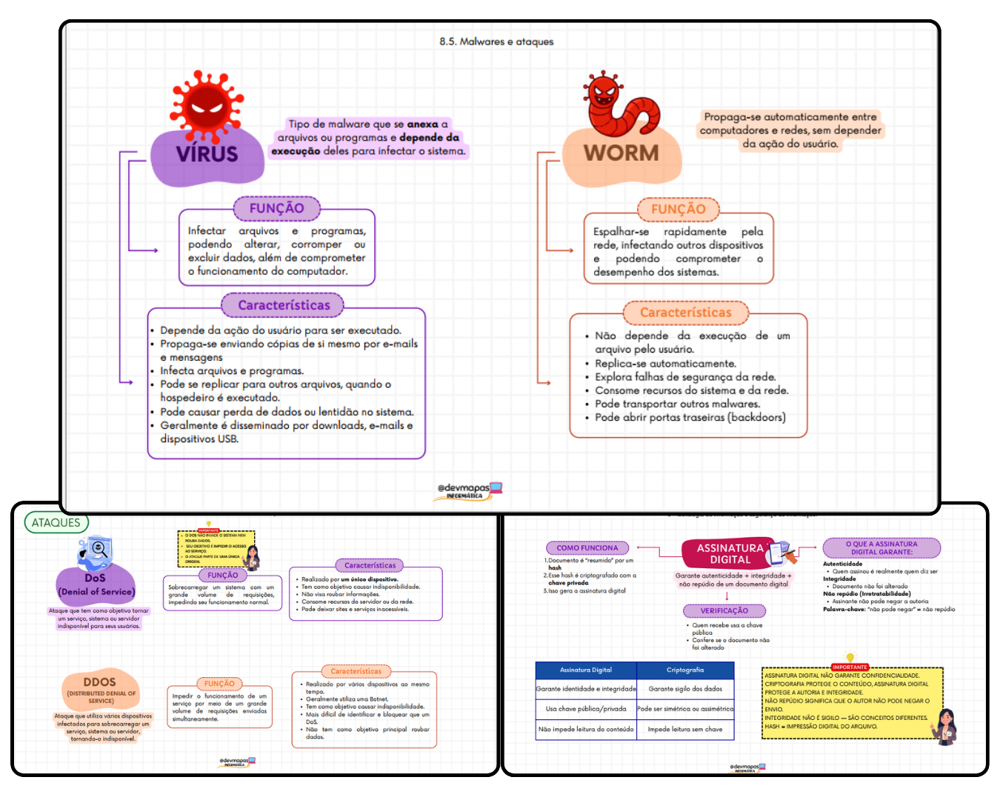

65 questões para praticar
Teste seus conhecimentos e identifique os assuntos que precisam de mais atenção.
MATERIAL EXCLUSIVO DE INFORMÁTICA
Treine com questões comentadas em formato de mini-aula e revise os pontos importantes da matéria com mapas mentais visuais.
Atenção: este material é somente de Informática. Não inclui as demais disciplinas do concurso.

Mais do que conferir o gabarito: entenda por que cada alternativa está certa ou errada e use os comentários para reforçar o conteúdo.
Teste seus conhecimentos e identifique os assuntos que precisam de mais atenção.
Aprenda com explicações didáticas que ajudam a compreender o conteúdo cobrado.
Entenda por que cada opção está correta ou incorreta, em vez de apenas decorar o gabarito.
Quer conhecer também o material para aprofundar sua revisão?
VER AS OPÇÕES DE ACESSOAlém de praticar com questões, reforce a teoria com mapas mentais visuais que organizam os conteúdos de Informática para facilitar suas revisões.
Confira exemplos reais do estilo visual do material.
As amostras são ilustrativas do material de revisão. Confira na oferta o conteúdo incluído em cada opção.
Confira relatos de quem já conhece os materiais do DevMapas.
Escolha entre praticar com o simulado ou combinar questões e revisão visual.
Para quem quer testar os conhecimentos e estudar pelos comentários.
Material exclusivamente de Informática para a PMPE.
Para quem quer praticar questões e reforçar a teoria em um só pacote.
Por apenas R$ 20 a mais que o simulado!
Tudo focado em Informática. Não inclui as demais disciplinas da PMPE.
Compra digital
Após a confirmação do pagamento, siga as instruções de acesso enviadas pela plataforma de compra.
Não. Este produto é exclusivamente de Informática. Ele não inclui as demais disciplinas do concurso.
Você recebe um simulado de Informática com 65 questões, comentários em formato de mini-aula e explicações de todas as alternativas.
O pacote inclui 3 simulados de Informática e o pacote completo de mapas de revisão, conforme descrito na oferta.
Sim, é um material digital. As instruções de acesso serão apresentadas após a confirmação da compra.
Você pode entrar em contato com o suporte pelo botão de WhatsApp desta página.
Fale com o suporte se precisar de ajuda sobre o material ou o processo de compra.
📲 FALAR NO WHATSAPP